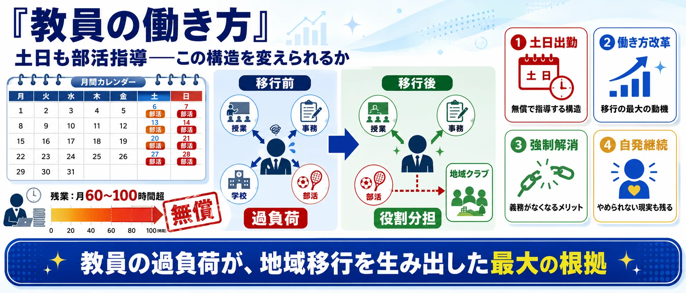
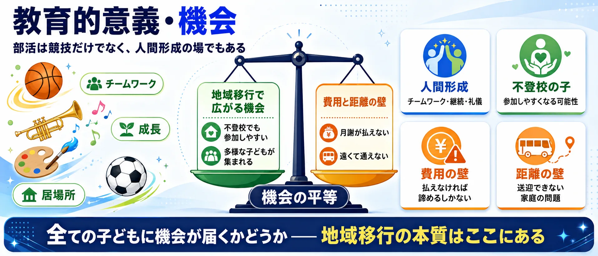
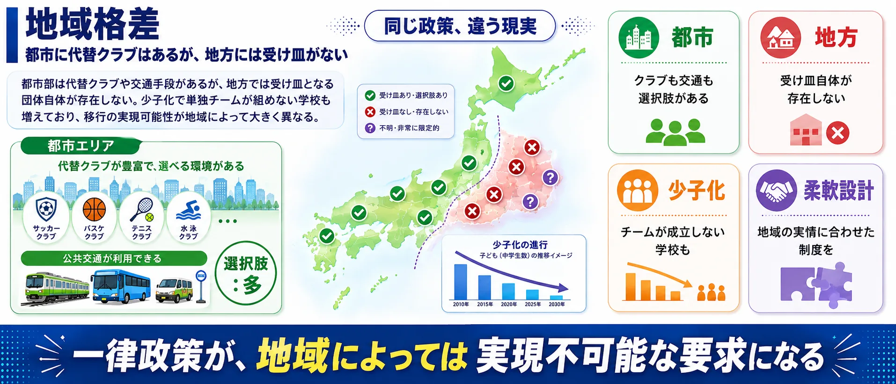

論点①
費用・家庭負担 — 「月8000円、年間28万円」
移行後の月会費が公立部活の頃より大幅に上がるケースが続出。3人きょうだいでは年間30万円近くになる家庭も。低所得家庭への補助の有無で地域差も生まれる。
懸念：家計を直撃。格差が広がる
擁護：市税補助・一律化で解決できる

教員の限界を地域で支える改革か、家庭負担と地域格差を広げる移行か？
中学校の部活動を地域団体・民間クラブに移行する政策について、SNS上の賛否を可視化したビューです。世論調査ではありません。
休日の部活指導に追われる若手教員と、費用や送迎に不安を抱える保護者。どちらも子どもの活動機会を守りたいからこそ、地域移行の進め方をめぐって向き合います。
※ この漫画はSNS上の代表的な意見をもとに構成したフィクションです。
「部活動の地域移行」の議論は「賛成か反対か」だけではありません。費用・指導者・教員の働き方・子どもの機会・地域差・行政手続き——6つの論点を整理してから投票に進んでください。
費用・家庭負担 — 「月8000円、年間28万円」
移行後の月会費が公立部活の頃より大幅に上がるケースが続出。3人きょうだいでは年間30万円近くになる家庭も。低所得家庭への補助の有無で地域差も生まれる。
受け皿・指導者 — 「ボランティア頼みは限界」
地域クラブの指導者がいない・報酬が最低賃金レベル・責任は重い。「タイミーで探した方が時給が高い」という声も。人材確保ができなければ移行自体が空洞化する。

教員の働き方 — 「ブラック部活の解消」が最大動機
教員が土日に無償で指導する構造が長時間労働の温床に。地域移行の最大の動機は教員の働き方改革。ただし「義務がなくなっても続ける教員が多い」という現実もある。

教育的意義・機会 — 「子どもの夢と居場所」
部活動は競技だけでなく人間形成・チームワーク・居場所の場でもある。地域移行で不登校の子も参加しやすくなる可能性がある一方、「費用で夢を奪われる」という怒りも。

地域格差 — 「都市はできるが地方は無理」
都市部は代替クラブや交通手段があるが、地方では受け皿となる団体自体が存在しない。少子化で単独チームが組めない学校も増えており、移行の実現可能性が地域で大きく異なる。

制度・移行プロセス — 「手探りのまま進んでいる」
国の方針は出たが、担い手・費用負担のルールは自治体ごとの手探り。「クラブ化と言っているのにチームしか作っていない」という本質的な批判も。プロセス設計の問題を問う声が最多。
使い方: 6つの論点を把握してから、次の投票で「自分が一番気になる論点」を選んでください。画像はタップで拡大できます。
文部科学省が推進する「部活動の地域移行」。教員の働き方改革や少子化対策として期待される一方、費用負担や指導者不足、部活文化の喪失を懸念する声もあります。
1あなたが最も気になる論点をタップ （全2問）
※ 世論調査ではありません。投票は匿名で集計され、サーバーに保存されます。
中心の「部活動の地域移行」を6つの論点セクターが囲みます。扇の大きさは投稿数、中心からの距離は感情の熱量（外側ほど激しい）、点の色はスタンス（緑=移行支持 / 赤=移行反対 / 灰=中立）。点をクリックすると元のXポストを開きます。
少子化と教員の長時間労働を背景に、中学校の部活動を学校から地域のスポーツクラブや民間団体へ移す「地域移行」が国の方針として進められています。まず休日の部活動から段階的に移行を進める計画で、教員の負担軽減と、少子化で単独では部活動を維持できない学校の受け皿づくりが狙いです。
賛成する立場からは「教員の働き方改革に不可欠」「専門的な指導を受けられる機会が増える」という声があります。一方で、「地域に受け皿となるクラブや指導者がいない」「会費負担が増え、家庭の経済力で子どもの機会に格差が生まれる」「学校の部活動が持っていた教育的な意義が失われる」といった懸念も根強く、特に都市部と地方の環境差が大きな論点になっています。
移行の担い手や費用負担のあり方は自治体ごとに手探りの状態が続いており、現場の教員・保護者・地域それぞれの立場から異なる意見がSNS上でも交わされています。
教員の長時間労働解消と少子化対応のため、地域との役割分担や部活の外部委託・縮小を進めるべきとする立場。
地域移行による保護者の費用負担増、受け皿不足、部活動の教育的価値の喪失を懸念する立場。
| 分類 | 部活 外部委託 | 部活 廃止 | 部活動 地域移行 | 部活動 地域移行 反対 | 部活動 地域移行 問題 | 部活動 地域移行 賛成 | 部活動 教員 負担 | 合計 |
|---|---|---|---|---|---|---|---|---|
| 教員負担の軽減 | 9 | 5 | 3 | 3 | 4 | 1 | 32 | 57 |
| 少子化・維持困難 | 0 | 2 | 5 | 2 | 0 | 0 | 0 | 9 |
| 費用・受け皿の懸念 | 4 | 1 | 4 | 0 | 2 | 0 | 2 | 13 |
| 教育的価値の喪失 | 1 | 1 | 3 | 0 | 0 | 1 | 2 | 8 |
| 条件付き・制度設計 | 3 | 1 | 5 | 0 | 3 | 1 | 3 | 16 |
| 部活廃止・縮小論 | 1 | 26 | 1 | 1 | 0 | 0 | 0 | 29 |
| 情報共有・ニュース言及 | 4 | 1 | 14 | 1 | 5 | 1 | 0 | 26 |
| その他・分類保留 | 8 | 2 | 4 | 7 | 1 | 0 | 0 | 22 |
| 分類 | 賛成 | 反対 | 条件付き | 情報共有 | 判断不能 | 合計 |
|---|---|---|---|---|---|---|
| 教員負担の軽減 | 57 | 0 | 0 | 0 | 0 | 57 |
| 少子化・維持困難 | 9 | 0 | 0 | 0 | 0 | 9 |
| 費用・受け皿の懸念 | 0 | 13 | 0 | 0 | 0 | 13 |
| 教育的価値の喪失 | 0 | 8 | 0 | 0 | 0 | 8 |
| 条件付き・制度設計 | 0 | 0 | 16 | 0 | 0 | 16 |
| 部活廃止・縮小論 | 29 | 0 | 0 | 0 | 0 | 29 |
| 情報共有・ニュース言及 | 0 | 0 | 0 | 26 | 0 | 26 |
| その他・分類保留 | 0 | 0 | 0 | 0 | 22 | 22 |
 自転車の青切符
自転車の青切符 生成AIと著作権
生成AIと著作権